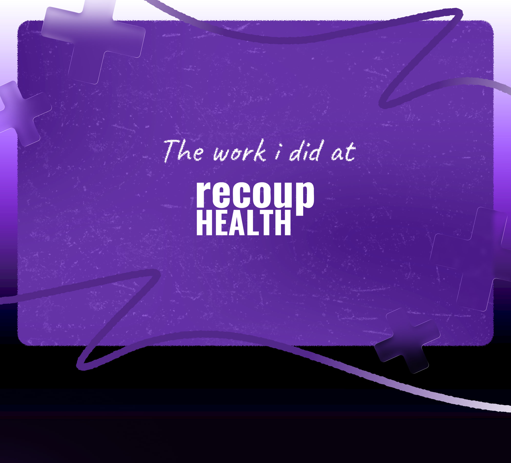
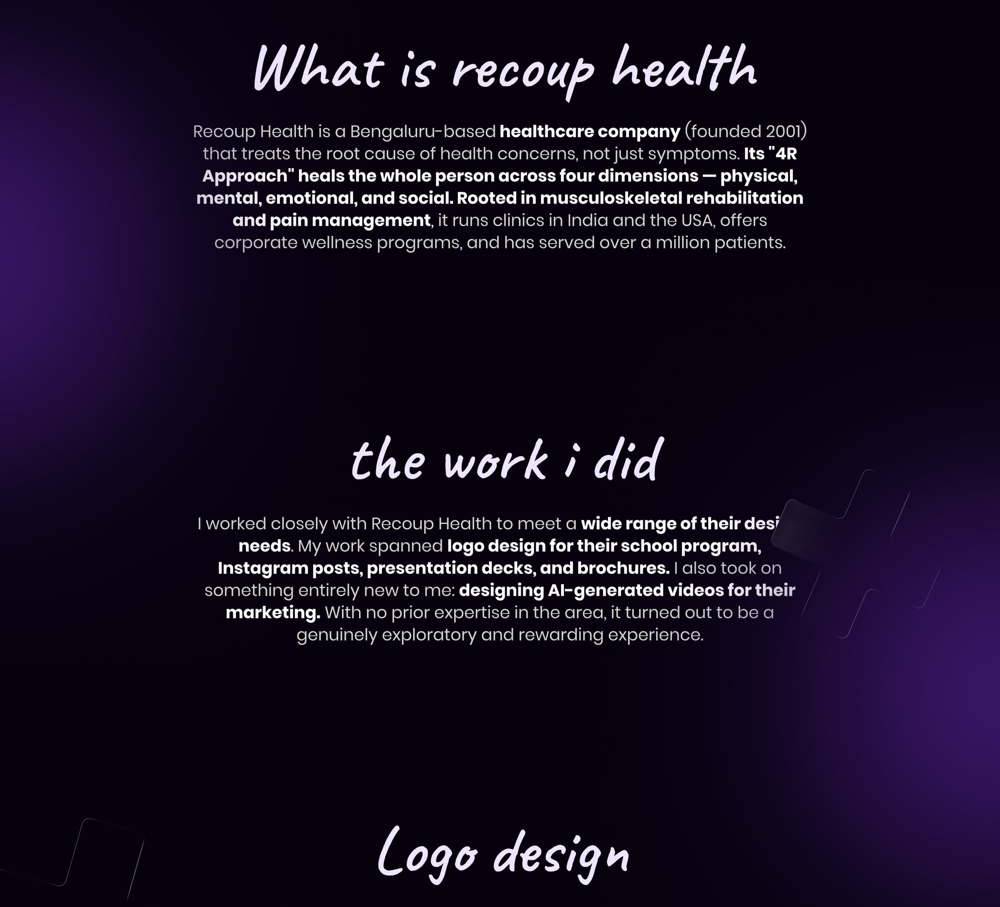
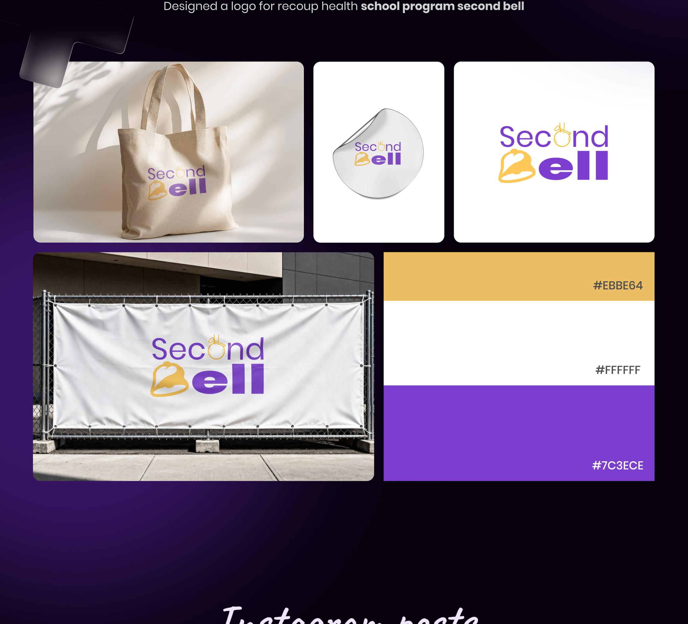
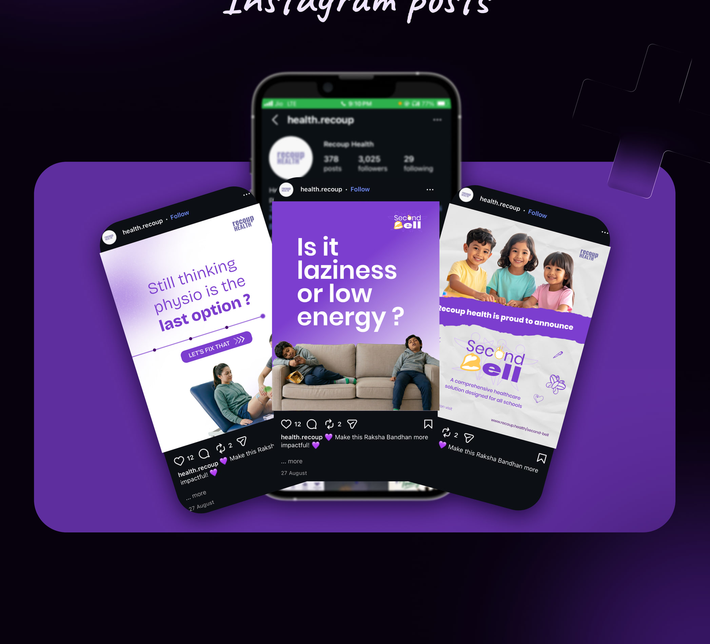
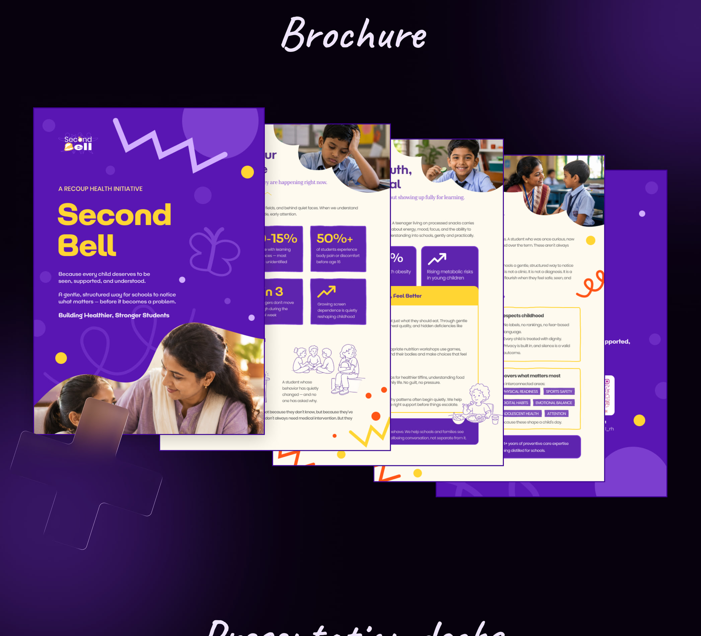
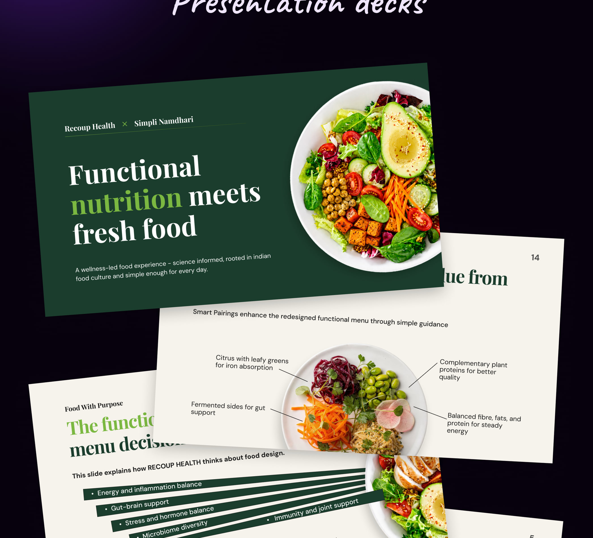
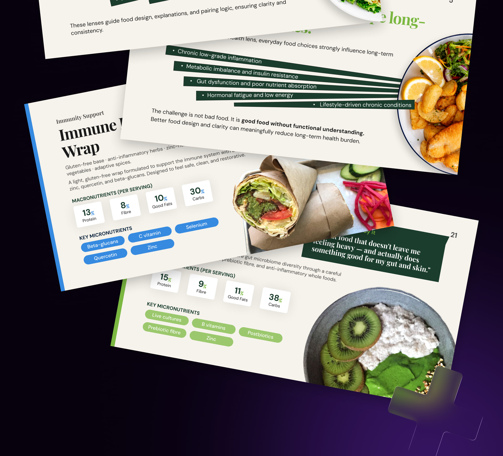
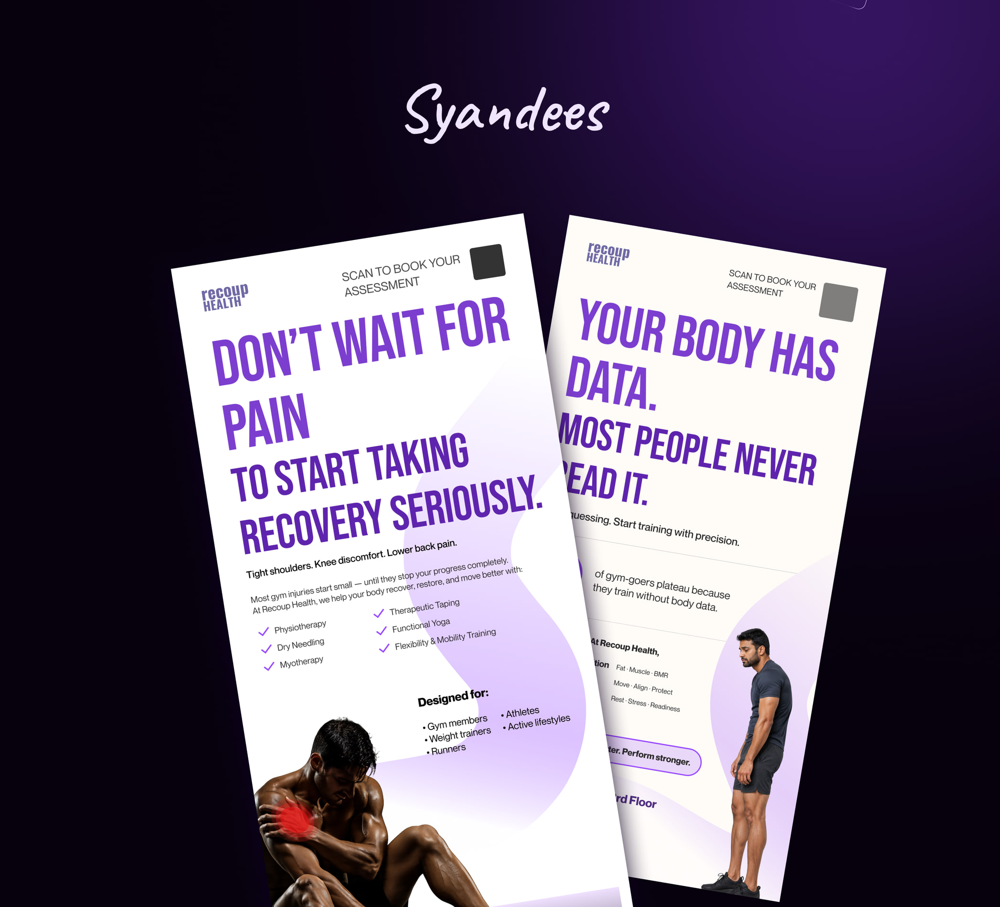
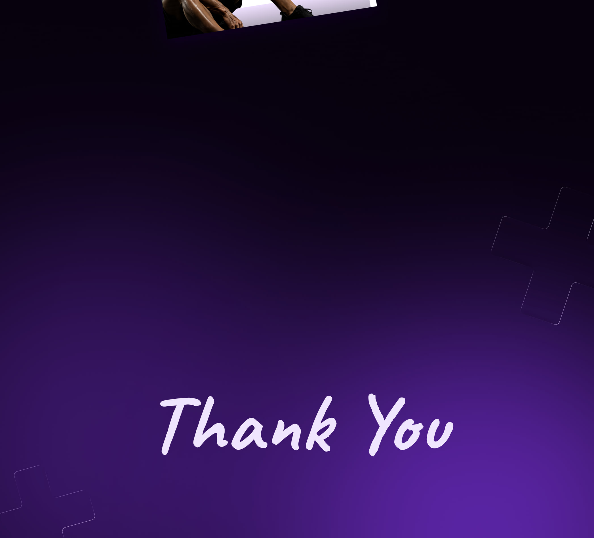

Work experience · 01
Recoup Health
Graphic design across identity, social content, brochures, presentation decks, and signage.
Read the work overview
Identity
Logo explorations and applications establish a consistent visual presence across physical and digital touchpoints.
Social content
Instagram posts translate health communication into compact, campaign-ready visual stories.
Brochure and standee designs extend the system into patient-facing and event materials.
Presentations
Presentation layouts organize service information and food imagery into a cohesive editorial system.








